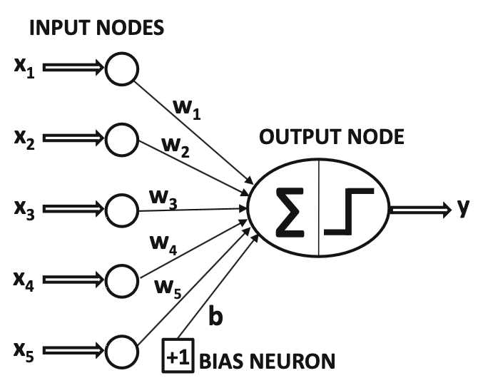
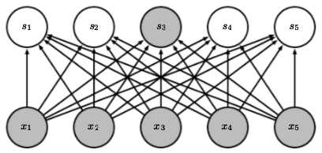
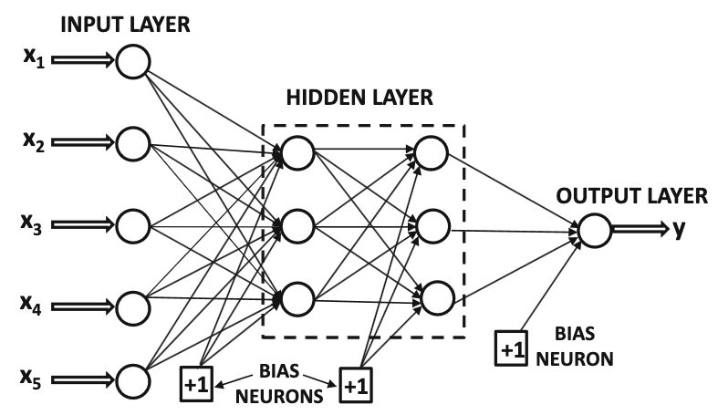
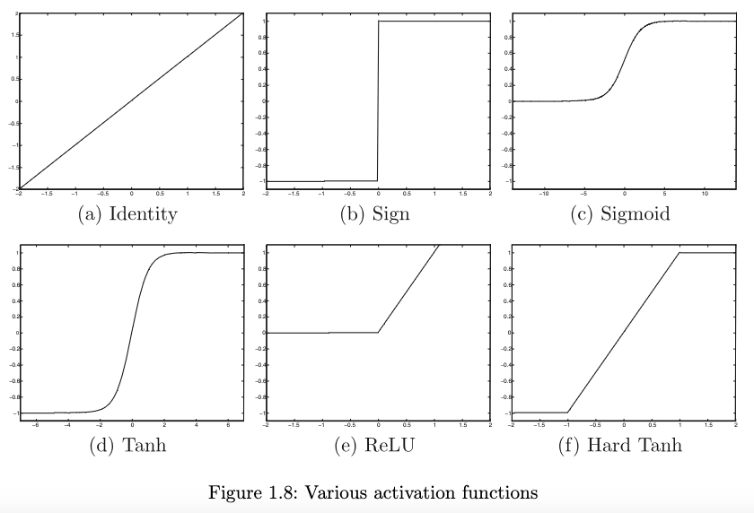
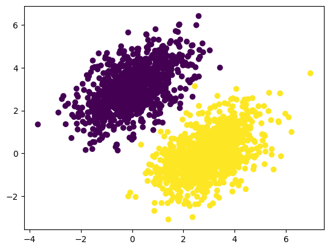
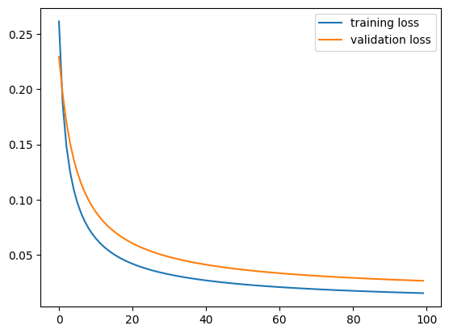

pip install tensorflowModul 7 Praktikum Sains Data: Pengantar TensorFlow & Keras
Kembali ke Sains Data
Sekarang kita sudah masuk ke materi artificial neural network (ANN) atau biasa disebut neural network (NN), yang mendasari dunia deep learning.
Saat modul praktikum ini disusun (April 2024), ada dua framework utama untuk deep learning di Python, yaitu:
TensorFlow: https://www.tensorflow.org/
(dan Keras di dalamnya: https://keras.io/)
PyTorch: https://pytorch.org/
Kedua framework ini bersaing. Umumnya, TensorFlow lebih sering digunakan di industri, sedangkan PyTorch lebih sering digunakan dalam riset/penelitian.
Di pertemuan kali ini, kita akan membahas TensorFlow, baik penggunaannya secara sendiri (pure TensorFlow, yaitu tanpa Keras) maupun dengan bantuan Keras. Kalau belum punya, instal terlebih dahulu:
Keras terinstal bersama TensorFlow (karena Keras ada di dalamnya).
Lalu import:
import tensorflow as tf
from tensorflow import keras
import numpy as np
import matplotlib.pyplot as plt2024-04-30 15:03:18.186211: I tensorflow/core/platform/cpu_feature_guard.cc:193] This TensorFlow binary is optimized with oneAPI Deep Neural Network Library (oneDNN) to use the following CPU instructions in performance-critical operations: AVX2 FMA
To enable them in other operations, rebuild TensorFlow with the appropriate compiler flags.Pengantar Neural Network
Overview:
Secara umum, suatu neural network terdiri dari sejumlah layer atau lapisan (minimal dua).
Layer pertama disebut input layer, dan layer terakhir disebut output layer.
Tiap layer terdiri dari sejumlah neuron, yang masing-masing bisa menyimpan suatu nilai.
Kecuali input layer, tiap neuron terhubung dengan sejumlah neuron di layer sebelumnya.
Tiap sambungan terdiri dari nilai weight (sebagai pengali), nilai bias (sebagai pergeseran), dan suatu “fungsi aktivasi” yang menghasilkan nilai untuk neuron tujuan.
Weight maupun bias disebut parameter dari neural network.
Proses training adalah terus-menerus memperbarui parameter hingga hasil prediksi neural network sudah cukup baik, dengan meminimumkan suatu loss function atau fungsi objektif (yang intinya menghitung error).
Suatu neural network bisa memiliki sejumlah layer, masing-masing dengan banyaknya neuron tertentu dan fungsi-fungsi aktivasi tertentu. Hal-hal itu disebut hyperparameter dari neural network. Suatu arsitektur adalah suatu pilihan/konfigurasi hyperparameter.
SLP: (Single-Layer) Perceptron
ANN paling pertama adalah perceptron (juga disebut SLP atau single-layer perceptron) yang dirancang oleh Frank Rosenblatt pada tahun 1957 (Géron, 2019). Ini adalah neural network yang paling sederhana, bahkan ini bisa disebut building block dari semua ANN (apabila diberi kebebasan untuk modifikasi). Konsep dasar neural network bisa kita pelajari di sini.

Sumber gambar: Aggarwal (2018) hal. 5
Perceptron hanya terdiri dari satu input layer dan satu output layer. Bahkan, aslinya hanya ada satu neuron di output layer.
Apabila dibutuhkan lebih dari satu neuron di output layer, itu bisa dianggap menggunakan lebih dari satu perceptron (yaitu menggunakan banyaknya perceptron sesuai banyaknya neuron di output layer), yang saling “ditumpuk”:

Sumber gambar: Goodfellow, et. al. (2016) hal. 337
Perhatikan bahwa, tiap neuron di layer asal terhubung dengan tiap neuron di layer tujuan. Layer tujuan seperti ini disebut dense (padat). Kebalikan dari dense adalah sparse.
Aslinya, fungsi aktivasi yang digunakan oleh perceptron adalah Heaviside step function \(H(v)\) yang mungkin kalian kenal dari mata kuliah PDB, atau juga disebut threshold activation function:
\[H(v) = \begin{cases} 1, & v \ge 0 \\ 0, & v < 0 \end{cases}\]
Sehingga, untuk output neuron ke-\(j\) yang disambung dari \(n\) input neuron, model perceptron bisa dirumuskan sebagai berikut:
\[y_j = H\left(\left(\sum_{i=1}^{n} w_{ij} x_i \right) + b_j\right)\]
dengan
\(x_i\) adalah nilai pada input neuron ke-\(i\)
\(y_j\) adalah nilai pada output neuron ke-\(j\)
\(w_{ij}\) adalah parameter weight untuk sambungan input neuron ke-\(i\) menuju output neuron ke-\(j\)
\(b_j\) adalah parameter bias untuk output neuron ke-\(j\)
Lebih umumnya,
\[y_j = \Phi\left(\left(\sum_{i=1}^{n} w_{ij} x_i \right) + b_j\right)\]
dengan \(\Phi(v)\) adalah sembarang fungsi aktivasi.
Note: seperti di gambar, sebenarnya bias juga bisa dianggap neuron istimewa yang nilai \(x_i\) nya selalu satu.
Biasanya, semua nilai di layer selanjutnya dihitung secara sekaligus menggunakan perkalian matriks, dengan perumusan:
\[\textbf{y} = \Phi\left(W^T \textbf{x} + \textbf{b}\right)\]
dengan \(\textbf{x} = [x_i]\), \(\textbf{y} = [y_j]\), dan \(\textbf{b} = [b_j]\) adalah vektor kolom, serta \(W = \left[w_{ij}\right]\) adalah matriks.
Itu untuk satu buah data training.
Bisa saja, beberapa data training diperhitungkan sekaligus. Caranya, vektor kolom \(\textbf{x}\) itu kita “lebarkan” ke samping sehingga menjadi matriks \(X = [x_{it}]\), sehingga data training ke-\(t\) ada di kolom ke-\(t\). Dengan demikian, output nya akan berupa matriks \(Y = [y_{jt}]\) dengan hasil untuk data training ke-\(t\) ada di kolom ke-\(t\). Selain itu, vektor \(\textbf{b}\) perlu diperluas menjadi matriks \(B\) dengan tiap kolom identik, dan fungsi aktivasi \(\Phi\) dihitung per kolom.
\[Y = \Phi\left(W^T X + B\right)\]
Kembali ke kasus satu buah data training. Biasanya, dataset disajikan dengan tiap fitur di kolom sendiri, tidak seperti perumusan kita sejauh ini dengan tiap fitur di baris tersendiri. Untuk menyesuaikan, kita bisa men-transpose semuanya:
\[\textbf{y} = \Phi\left(\textbf{x} W + \textbf{b}\right)\]
dengan \(\textbf{x} = [x_i]\), \(\textbf{y} = [y_j]\), dan \(\textbf{b} = [b_j]\) adalah vektor baris, serta \(W = \left[w_{ji}\right]\) adalah matriks berisi bobot untuk menyambung ke output neuron ke-\(j\) dari input neuron ke-\(i\).
MLP: Multilayer Perceptron
Konsep single-layer perceptron bisa diperumum menjadi multilayer perceptron atau neural network yang biasa kita kenal, dengan menambahkan beberapa layer di antara input layer dan output layer. Semua layer selain input layer dan output layer disebut hidden layer.

Sumber gambar: Aggarwal (2018) hal. 18
Konsep perhitungan antara tiap layer tetap sama, yaitu
\[\textbf{y} = \Phi\left(\textbf{w}^T \textbf{x} + \textbf{b}\right)\]
(versi vektor kolom), atau
\[\textbf{y} = \Phi\left(\textbf{x} W + \textbf{b}\right)\]
(versi vektor baris)
Fungsi Aktivasi

Sumber gambar: Aggarwal (2018) hal. 13
Beberapa fungsi aktivasi adalah (Aggarwal, 2018, hal. 12-13):
- “Linier” atau identitas
\[\Phi(v) = v\]
- Sign (fungsi tanda): \(\text{sign}(v)\) atau \(\text{sgn}(v)\)
\[ \Phi(v) = \text{sign}(v) = \begin{cases} 1, & v > 0 \\ 0, & v = 0 \\ -1, & v < 0 \end{cases} \]
- Sigmoid, terkadang dilambangkan \(\sigma(v)\) dan terkadang disebut fungsi aktivasi logistik
\[\Phi(v) = \frac{1}{1 + e^{-v}}\]
- (Soft) tanh: \(\tanh(v)\)
\[\Phi(v) = \frac{e^{2v} - 1}{e^{2v} + 1} = 2 * \text{sigmoid}(2v) - 1\]
- Rectified Linear Unit (ReLU)
\[\Phi(v) = \max\{v, 0\}\]
- Hard tanh
\[\Phi(v) = \max\{\min\{v, 1\}, -1\}\]
Fungsi aktivasi yang paling sering digunakan adalah ReLU, kecuali untuk output layer.
Untuk output layer, biasanya,
untuk regresi, banyaknya neuron sesuai banyaknya nilai prediksi (umumnya hanya satu), dan digunakan fungsi aktivasi linier
untuk klasifikasi multiclass (lebih dari dua kelas), biasanya banyaknya output neuron sesuai banyaknya kelas, dan digunakan fungsi aktivasi softmax sebagai berikut, agar output berupa peluang tiap kelas:
\[\Phi(\overline{v})_i = \frac{\exp(v_i)}{\sum_{j=1}^k \exp(v_j)}\]
- untuk klasifikasi biner, hanya ada satu neuron di output layer, dan digunakan fungsi aktivasi sigmoid. (Keberadaan hanya satu output neuron lebih hemat daripada menggunakan dua output neuron)
Loss function
Misalkan \(y_i\) adalah nilai sebenarnya dan \(\hat{y}_i\) adalah hasil prediksi.
Untuk regresi, biasa digunakan MSE (mean squared error), juga disebut L2 loss:
\[\text{MSE}(y, \hat{y}) = \frac{1}{n} \sum_{i=1}^{n} \left( y_i - \hat{y}_i \right)^2\]
Untuk klasifikasi, biasa digunakan yang namanya cross-entropy loss, juga disebut logistic loss atau log loss:
\[L_{\text{log}}(y,\hat{y}) = -(y \ln (\hat{y}) + (1 - y) \ln (1 - \hat{y}))\]
Proses training
Proses training untuk neural network dilakukan secara iteratif, yaitu tiap iterasi akan memperbarui parameter sehingga nilai loss function menjadi lebih kecil.
Tiap iterasi melakukan langkah-langkah berikut untuk tiap data training:
Forward pass: menghitung nilai output akhir, yaitu \(\hat{y}\) (hasil prediksi), berdasarkan input data training.
Menghitung loss antara \(y\) (nilai asli) dan \(\hat{y}\)
Backpropagation: menghitung gradien dari loss terhadap tiap parameter, secara “mundur”
Update optimizer: menggunakan algoritma optimizer seperti gradient descent untuk memperbarui parameter-parameter (weights and biases) berdasarkan gradien dari loss
Note: ada banyak optimizer, seperti gradient descent, SGD (stochastic gradient descent), dan Adam (adaptive moment estimation). Pilihan optimizer (serta parameter-parameter yang bisa diatur untuk optimizer, seperti learning rate) juga menjadi hyperparameter untuk neural network.
Note: istilah backward pass meliputi langkah backpropagation dan update optimizer.
Apabila data training sangat banyak, terkadang data training tersebut dibagi menjadi beberapa batch, dan tiap iterasi menggunakan batch yang berbeda. Apabila semua batch sudah diproses, sebutannya adalah satu epoch. Sehingga, satu epoch terdiri dari sejumlah iterasi sesuai banyaknya batch.
(Apabila data training tidak dibagi menjadi batch, maka satu epoch sama dengan satu iterasi.)
Train-Validation-Test Split
Ketika menggunakan metode machine learning yang di-training secara iteratif, seperti neural network, biasanya ada juga yang namanya validation data. Sehingga, di awal, dataset dipisah menjadi data train, data validation, dan data test.
Gunanya, kita bisa menguji akurasi model di akhir tiap epoch, menggunakan data validation daripada data test.
Rasio yang paling sering digunakan adalah 80-10-10, yaitu 80% data train, 10% data validation, dan 10% data test.
Apabila menggunakan scikit-learn, untuk melakukan train-validation-test split, caranya adalah dengan split dua kali, yaitu
Split menjadi data “train” dan data test
Data “train” itu di-split lagi menjadi data train sesungguhnya dan data validation
atau bisa juga
Split menjadi data train dan data “test”
Data “test” itu di-split lagi menjadi data validation dan data test sesungguhnya
Gradient descent
Metode gradient descent mencari minimum lokal dari suatu fungsi \(g\) (dalam hal ini, loss function) dengan rumus iterasi seperti berikut:
\[\textbf{x}_{i+1} = \textbf{x}_i - \eta \nabla g\left(\textbf{x}_i\right)\]
dengan \(\eta\) adalah learning rate. Simbol nabla (\(\nabla\)) menandakan perhitungan gradien.
Perhatikan bahwa gradien menandakan arah tercepat untuk kenaikan fungsi, seringkali disebut direction of steepest ascent. Di sini, justru kita mengurangi; atau sama saja, menambah dengan kebalikannya, yaitu arah tercepat untuk penurunan fungsi. Sedangkan, learning rate melambangkan seberapa jauh kita melangkah ke arah penurunan tersebut. Harapannya, kita akan cepat konvergen menuju minimum fungsi, karena kita terus melangkah ke arah penurunan tercepat.
(Pure) TensorFlow
import tensorflow as tfTensor, Konstanta, Variabel
Tensor adalah semacam perumuman dari array/vektor ataupun matriks.
Skalar (bilangan) adalah tensor berdimensi nol (atau rank nol).
Array atau vektor adalah tensor berdimensi satu (atau rank satu).
Matriks adalah tensor berdimensi dua (atau rank dua).
Istilah “tensor” biasanya merujuk pada tensor berdimensi tiga (atau rank tiga), yaitu semacam matriks tapi tiga dimensi, sehingga ada baris, kolom, dan satu dimensi lagi.
Fitur tensor di TensorFlow mirip dengan fitur array di numpy, yang memang juga bisa multidimensi.
x = tf.zeros(shape = (3,4))
print(x)tf.Tensor(
[[0. 0. 0. 0.]
[0. 0. 0. 0.]
[0. 0. 0. 0.]], shape=(3, 4), dtype=float32)x = tf.ones(shape = (3,4))
print(x)tf.Tensor(
[[1. 1. 1. 1.]
[1. 1. 1. 1.]
[1. 1. 1. 1.]], shape=(3, 4), dtype=float32)Untuk menentukan array kita sendiri, di numpy digunakan numpy.array.
Untuk menentukan tensor kita sendiri, di TensorFlow digunakan tensorflow.constant (agar nilainya tidak bisa diubah) atau tensorflow.Variable (nilainya bisa diubah).
Pada umumnya (apabila tidak ada keterangan), tensor di TensorFlow berupa tensorflow.constant
const0 = tf.constant(1.5)
print(const0)tf.Tensor(1.5, shape=(), dtype=float32)print(tf.rank(const0))tf.Tensor(0, shape=(), dtype=int32)const1 = tf.constant([2.31, 4.567, 8.9])
print(const1)tf.Tensor([2.31 4.567 8.9 ], shape=(3,), dtype=float32)print(tf.rank(const1))tf.Tensor(1, shape=(), dtype=int32)const1[0] = 52.5TypeError: 'tensorflow.python.framework.ops.EagerTensor' object does not support item assignmentconst2 = tf.constant([
[1, 2.718, 3.14],
[4, 5, 6.28]
])
print(const2)tf.Tensor(
[[1. 2.718 3.14 ]
[4. 5. 6.28 ]], shape=(2, 3), dtype=float32)print(tf.rank(const2))tf.Tensor(2, shape=(), dtype=int32)v = tf.Variable(initial_value = tf.zeros(shape = (2,3)))
print(v)<tf.Variable 'Variable:0' shape=(2, 3) dtype=float32, numpy=
array([[0., 0., 0.],
[0., 0., 0.]], dtype=float32)>Assignment untuk variabel di TensorFlow dilakukan dengan .assign
v.assign(tf.ones(shape = (2,3)))
print(v)<tf.Variable 'Variable:0' shape=(2, 3) dtype=float32, numpy=
array([[1., 1., 1.],
[1., 1., 1.]], dtype=float32)>v[0, 0].assign(9)
print(v)<tf.Variable 'Variable:0' shape=(2, 3) dtype=float32, numpy=
array([[9., 1., 1.],
[1., 1., 1.]], dtype=float32)>Ada juga .assign_add, sama saja dengan +=
v.assign_add(tf.ones(shape = (2,3)))
print(v)<tf.Variable 'Variable:0' shape=(2, 3) dtype=float32, numpy=
array([[10., 2., 2.],
[ 2., 2., 2.]], dtype=float32)>Serupa, ada .assign_sub yaitu -=
v.assign_sub(tf.ones(shape = (2,3)))
print(v)<tf.Variable 'Variable:0' shape=(2, 3) dtype=float32, numpy=
array([[9., 1., 1.],
[1., 1., 1.]], dtype=float32)>Kita bisa membuat tensor dengan nilai yang random, misalnya dari distribusi normal atau dari distribusi uniform
# dari distribusi normal
x = tf.random.normal(shape = (2,3), mean = 0, stddev = 1)
print(x)tf.Tensor(
[[ 1.2542483 -0.41693744 1.0116149 ]
[-1.4155766 0.17204648 -0.6892854 ]], shape=(2, 3), dtype=float32)# dari distribusi uniform
x = tf.random.uniform(shape = (2,3), minval = 0, maxval = 1)
print(x)tf.Tensor(
[[0.51321495 0.26164746 0.09113109]
[0.81229377 0.67134035 0.36057925]], shape=(2, 3), dtype=float32)Operasi di TensorFlow mirip dengan numpy
a = 4 * tf.ones((2, 2))
print(a)tf.Tensor(
[[4. 4.]
[4. 4.]], shape=(2, 2), dtype=float32)b = tf.square(a)
print(b)tf.Tensor(
[[16. 16.]
[16. 16.]], shape=(2, 2), dtype=float32)c = tf.sqrt(a)
print(c)tf.Tensor(
[[2. 2.]
[2. 2.]], shape=(2, 2), dtype=float32)d = b + c
print(d)tf.Tensor(
[[18. 18.]
[18. 18.]], shape=(2, 2), dtype=float32)# perkalian matriks
e = tf.matmul(a, c)
print(e)tf.Tensor(
[[16. 16.]
[16. 16.]], shape=(2, 2), dtype=float32)# perkalian per elemen
e *= d
print(e)tf.Tensor(
[[288. 288.]
[288. 288.]], shape=(2, 2), dtype=float32)Automatic differentiation dengan GradientTape
TensorFlow memiliki fitur yang bernama automatic differentiation, juga disebut autodiff atau autograd. Dengan fitur ini, TensorFlow bisa menghitung turunan/gradien secara otomatis. Fitur ini membedakan antara TensorFlow dengan numpy.
Caranya adalah menggunakan GradientTape seperti berikut. Semua operasi di dalam with statement dicatat oleh GradientTape, yang kemudian bisa menghitung gradiennya.
Contohnya, turunan \(x^3\) terhadap \(x\) di \(x=4\) adalah \(3(4)^2 = 48\).
x = tf.Variable(4.0)
with tf.GradientTape() as tape:
y = x ** 3
dy_dx = tape.gradient(y, x)
print(dy_dx)tf.Tensor(48.0, shape=(), dtype=float32)Tidak harus dengan tensorflow.Variable, bahkan dengan tensorflow.constant juga bisa. Namun, kita harus secara eksplisit meminta TensorFlow untuk memperhatikan nilai x, yaitu dengan .watch
x = tf.constant(4.0)
with tf.GradientTape() as tape:
tape.watch(x)
y = x ** 3
dy_dx = tape.gradient(y, x)
print(dy_dx)tf.Tensor(48.0, shape=(), dtype=float32)Kita bisa menghitung turunan kedua dengan nested with statement seperti berikut, contohnya turunan kedua dari \(x^3\) terhadap \(x\) di \(x=4\) adalah \(6(4) = 24\)
x = tf.Variable(4.0)
with tf.GradientTape() as tape2:
with tf.GradientTape() as tape1:
y = x ** 3
dy_dx = tape1.gradient(y, x)
dy2_dx2 = tape2.gradient(dy_dx, x)
print(dy2_dx2)tf.Tensor(24.0, shape=(), dtype=float32)Klasifikasi biner dengan perceptron
Men-generate dataset titik-titik dua dimensi dengan dua kelas
num_samples_per_class, num_classes = 1000, 2
negative_samples = np.random.multivariate_normal(mean = [0,3], cov = [[1,0.5],[0.5,1]], size = num_samples_per_class)
positive_samples = np.random.multivariate_normal(mean = [3,0], cov = [[1,0.5],[0.5,1]], size = num_samples_per_class)
inputs = np.vstack((negative_samples, positive_samples)).astype(np.float32)
targets = np.vstack((
np.zeros((num_samples_per_class, 1), dtype = 'float32'),
np.ones((num_samples_per_class, 1), dtype = 'float32')
))print(inputs.shape)
print(targets.shape)(2000, 2)
(2000, 1)plt.scatter(inputs[:, 0], inputs[:, 1], c=targets[:, 0])
plt.show()
Untuk input dua dimensi dan klasifikasi biner, kita perlu perceptron dengan dua neuron di input layer dan satu neuron di output layer. Sebelum proses training dimulai, nilai matriks \(W\) dan vektor kolom \(b\) diisi secara random terlebih dahulu.
input_dim = 2
output_dim = 1
W = tf.Variable(tf.random.normal(shape = (input_dim, output_dim)))
b = tf.Variable(tf.random.normal(shape = (output_dim,)))# forward pass
def model(inputs):
return tf.sigmoid(
tf.matmul(inputs, W) + b
)# cross entropy loss
def entropy_loss(y, yhat):
per_sample_losses = - y * tf.math.log(yhat) - (1-y) * tf.math.log(1-yhat)
return tf.reduce_mean(per_sample_losses)# training loop
learning_rate = 0.1
def training_step(inputs, targets):
with tf.GradientTape() as tape:
predictions = model(inputs)
loss = entropy_loss(targets, predictions)
grad_loss_wrt_W, grad_loss_wrt_b = tape.gradient(loss, [W, b])
# update menggunakan gradient descent
W.assign_sub(learning_rate * grad_loss_wrt_W)
b.assign_sub(learning_rate * grad_loss_wrt_b)
return loss# training loop/process/epoch
for epoch in range(100):
loss = training_step(inputs, targets)
print(f"Loss at epoch {epoch}: {loss}")Loss at epoch 0: 0.6356502771377563
Loss at epoch 1: 0.5394761562347412
Loss at epoch 2: 0.4659949839115143
Loss at epoch 3: 0.4092557430267334
Loss at epoch 4: 0.3647000789642334
Loss at epoch 5: 0.32904741168022156
Loss at epoch 6: 0.29999035596847534
Loss at epoch 7: 0.2759065628051758
Loss at epoch 8: 0.25564298033714294
Loss at epoch 9: 0.23836685717105865
Loss at epoch 10: 0.22346581518650055
Loss at epoch 11: 0.21048182249069214
Loss at epoch 12: 0.19906604290008545
Loss at epoch 13: 0.18894900381565094
Loss at epoch 14: 0.17991921305656433
Loss at epoch 15: 0.171808660030365
Loss at epoch 16: 0.16448216140270233
Loss at epoch 17: 0.1578298956155777
Loss at epoch 18: 0.15176154673099518
Loss at epoch 19: 0.14620234072208405
Loss at epoch 20: 0.1410897672176361
Loss at epoch 21: 0.1363711655139923
Loss at epoch 22: 0.13200189173221588
Loss at epoch 23: 0.12794384360313416
Loss at epoch 24: 0.12416423857212067
Loss at epoch 25: 0.12063482403755188
Loss at epoch 26: 0.11733102053403854
Loss at epoch 27: 0.11423142999410629
Loss at epoch 28: 0.11131726205348969
Loss at epoch 29: 0.10857197642326355
Loss at epoch 30: 0.10598097741603851
Loss at epoch 31: 0.10353130847215652
Loss at epoch 32: 0.10121144354343414
Loss at epoch 33: 0.09901105612516403
Loss at epoch 34: 0.09692094475030899
Loss at epoch 35: 0.09493280202150345
Loss at epoch 36: 0.0930391252040863
Loss at epoch 37: 0.09123318642377853
Loss at epoch 38: 0.08950886130332947
Loss at epoch 39: 0.08786056190729141
Loss at epoch 40: 0.08628326654434204
Loss at epoch 41: 0.08477234095335007
Loss at epoch 42: 0.08332355320453644
Loss at epoch 43: 0.08193304389715195
Loss at epoch 44: 0.08059726655483246
Loss at epoch 45: 0.07931295037269592
Loss at epoch 46: 0.07807708531618118
Loss at epoch 47: 0.07688692212104797
Loss at epoch 48: 0.07573988288640976
Loss at epoch 49: 0.07463356107473373
Loss at epoch 50: 0.07356579601764679
Loss at epoch 51: 0.07253453135490417
Loss at epoch 52: 0.07153788208961487
Loss at epoch 53: 0.07057405263185501
Loss at epoch 54: 0.06964139640331268
Loss at epoch 55: 0.06873839348554611
Loss at epoch 56: 0.06786361336708069
Loss at epoch 57: 0.06701568514108658
Loss at epoch 58: 0.0661933571100235
Loss at epoch 59: 0.06539544463157654
Loss at epoch 60: 0.06462085992097855
Loss at epoch 61: 0.06386853754520416
Loss at epoch 62: 0.06313750147819519
Loss at epoch 63: 0.0624268501996994
Loss at epoch 64: 0.061735689640045166
Loss at epoch 65: 0.06106320023536682
Loss at epoch 66: 0.06040862947702408
Loss at epoch 67: 0.05977122485637665
Loss at epoch 68: 0.05915031582117081
Loss at epoch 69: 0.058545228093862534
Loss at epoch 70: 0.05795534700155258
Loss at epoch 71: 0.057380083948373795
Loss at epoch 72: 0.05681890249252319
Loss at epoch 73: 0.05627123638987541
Loss at epoch 74: 0.055736616253852844
Loss at epoch 75: 0.05521455407142639
Loss at epoch 76: 0.05470460280776024
Loss at epoch 77: 0.05420632287859917
Loss at epoch 78: 0.05371929705142975
Loss at epoch 79: 0.053243134170770645
Loss at epoch 80: 0.05277746543288231
Loss at epoch 81: 0.052321940660476685
Loss at epoch 82: 0.051876217126846313
Loss at epoch 83: 0.05143996328115463
Loss at epoch 84: 0.051012881100177765
Loss at epoch 85: 0.05059466511011124
Loss at epoch 86: 0.050185028463602066
Loss at epoch 87: 0.049783699214458466
Loss at epoch 88: 0.04939041659235954
Loss at epoch 89: 0.0490049310028553
Loss at epoch 90: 0.04862702637910843
Loss at epoch 91: 0.04825644567608833
Loss at epoch 92: 0.0478929802775383
Loss at epoch 93: 0.04753640666604042
Loss at epoch 94: 0.04718654602766037
Loss at epoch 95: 0.04684317857027054
Loss at epoch 96: 0.0465061329305172
Loss at epoch 97: 0.04617522284388542
Loss at epoch 98: 0.045850273221731186
Loss at epoch 99: 0.04553113132715225predictions = model(inputs)
print(predictions)
plt.scatter(inputs[:, 0], inputs[:, 1], c=predictions[:, 0] > 0.5)
plt.show()tf.Tensor(
[[0.0227507 ]
[0.00890069]
[0.01428704]
...
[0.87311286]
[0.97183764]
[0.98756224]], shape=(2000, 1), dtype=float32)
Keras
from tensorflow import kerasprint(inputs.shape)
print(targets.shape)(2000, 2)
(2000, 1)Sequential API
model2 = keras.Sequential([
keras.layers.InputLayer(input_shape = (2,)),
keras.layers.Dense(units = 1, activation = 'sigmoid')
])model2.summary()Model: "sequential"
_________________________________________________________________
Layer (type) Output Shape Param #
=================================================================
dense (Dense) (None, 1) 3
=================================================================
Total params: 3
Trainable params: 3
Non-trainable params: 0
_________________________________________________________________keras.utils.plot_model(
model2,
show_shapes = True,
to_file = "model2.png"
)
Untuk memilih hyperparameter yaitu optimizer dan loss function, kedua kode berikut ini ekuivalen:
model2.compile(optimizer="sgd",
loss="binary_crossentropy",
metrics=["accuracy"])model2.compile(optimizer=keras.optimizers.SGD(),
loss=keras.losses.BinaryCrossentropy(),
metrics=[keras.metrics.BinaryAccuracy()])Selanjutnya, tinggal training
x_train = inputs
y_train = targets
history2 = model2.fit(x_train, y_train, epochs=100, validation_split=0.2)Epoch 1/100
50/50 [==============================] - 2s 10ms/step - loss: 0.2617 - binary_accuracy: 0.9994 - val_loss: 0.2296 - val_binary_accuracy: 0.9950
Epoch 2/100
50/50 [==============================] - 0s 6ms/step - loss: 0.1873 - binary_accuracy: 1.0000 - val_loss: 0.1960 - val_binary_accuracy: 0.9925
Epoch 3/100
50/50 [==============================] - 0s 4ms/step - loss: 0.1493 - binary_accuracy: 0.9994 - val_loss: 0.1707 - val_binary_accuracy: 0.9925
Epoch 4/100
50/50 [==============================] - 0s 6ms/step - loss: 0.1256 - binary_accuracy: 0.9994 - val_loss: 0.1515 - val_binary_accuracy: 0.9925
Epoch 5/100
50/50 [==============================] - 0s 5ms/step - loss: 0.1092 - binary_accuracy: 0.9994 - val_loss: 0.1365 - val_binary_accuracy: 0.9925
Epoch 6/100
50/50 [==============================] - 0s 10ms/step - loss: 0.0971 - binary_accuracy: 0.9994 - val_loss: 0.1246 - val_binary_accuracy: 0.9925
Epoch 7/100
50/50 [==============================] - 0s 5ms/step - loss: 0.0878 - binary_accuracy: 0.9994 - val_loss: 0.1149 - val_binary_accuracy: 0.9925
Epoch 8/100
50/50 [==============================] - 0s 4ms/step - loss: 0.0803 - binary_accuracy: 0.9994 - val_loss: 0.1067 - val_binary_accuracy: 0.9925
Epoch 9/100
50/50 [==============================] - 0s 4ms/step - loss: 0.0742 - binary_accuracy: 0.9994 - val_loss: 0.0998 - val_binary_accuracy: 0.9925
Epoch 10/100
50/50 [==============================] - 0s 4ms/step - loss: 0.0691 - binary_accuracy: 0.9994 - val_loss: 0.0939 - val_binary_accuracy: 0.9925
Epoch 11/100
50/50 [==============================] - 1s 10ms/step - loss: 0.0648 - binary_accuracy: 0.9994 - val_loss: 0.0888 - val_binary_accuracy: 0.9925
Epoch 12/100
50/50 [==============================] - 0s 6ms/step - loss: 0.0610 - binary_accuracy: 0.9994 - val_loss: 0.0843 - val_binary_accuracy: 0.9925
Epoch 13/100
50/50 [==============================] - 0s 5ms/step - loss: 0.0578 - binary_accuracy: 0.9994 - val_loss: 0.0803 - val_binary_accuracy: 0.9925
Epoch 14/100
50/50 [==============================] - 0s 5ms/step - loss: 0.0549 - binary_accuracy: 0.9994 - val_loss: 0.0769 - val_binary_accuracy: 0.9925
Epoch 15/100
50/50 [==============================] - 0s 7ms/step - loss: 0.0524 - binary_accuracy: 0.9994 - val_loss: 0.0738 - val_binary_accuracy: 0.9925
Epoch 16/100
50/50 [==============================] - 1s 13ms/step - loss: 0.0501 - binary_accuracy: 0.9994 - val_loss: 0.0709 - val_binary_accuracy: 0.9925
Epoch 17/100
50/50 [==============================] - 0s 6ms/step - loss: 0.0481 - binary_accuracy: 0.9994 - val_loss: 0.0684 - val_binary_accuracy: 0.9925
Epoch 18/100
50/50 [==============================] - 0s 8ms/step - loss: 0.0463 - binary_accuracy: 0.9994 - val_loss: 0.0661 - val_binary_accuracy: 0.9925
Epoch 19/100
50/50 [==============================] - 0s 6ms/step - loss: 0.0446 - binary_accuracy: 0.9994 - val_loss: 0.0640 - val_binary_accuracy: 0.9925
Epoch 20/100
50/50 [==============================] - 0s 4ms/step - loss: 0.0430 - binary_accuracy: 0.9994 - val_loss: 0.0620 - val_binary_accuracy: 0.9925
Epoch 21/100
50/50 [==============================] - 0s 4ms/step - loss: 0.0416 - binary_accuracy: 0.9994 - val_loss: 0.0602 - val_binary_accuracy: 0.9925
Epoch 22/100
50/50 [==============================] - 0s 4ms/step - loss: 0.0403 - binary_accuracy: 1.0000 - val_loss: 0.0586 - val_binary_accuracy: 0.9925
Epoch 23/100
50/50 [==============================] - 0s 3ms/step - loss: 0.0391 - binary_accuracy: 0.9994 - val_loss: 0.0570 - val_binary_accuracy: 0.9925
Epoch 24/100
50/50 [==============================] - 0s 5ms/step - loss: 0.0380 - binary_accuracy: 1.0000 - val_loss: 0.0556 - val_binary_accuracy: 0.9925
Epoch 25/100
50/50 [==============================] - 1s 12ms/step - loss: 0.0370 - binary_accuracy: 1.0000 - val_loss: 0.0543 - val_binary_accuracy: 0.9925
Epoch 26/100
50/50 [==============================] - 0s 9ms/step - loss: 0.0360 - binary_accuracy: 1.0000 - val_loss: 0.0531 - val_binary_accuracy: 0.9925
Epoch 27/100
50/50 [==============================] - 0s 5ms/step - loss: 0.0351 - binary_accuracy: 1.0000 - val_loss: 0.0519 - val_binary_accuracy: 0.9925
Epoch 28/100
50/50 [==============================] - 1s 10ms/step - loss: 0.0343 - binary_accuracy: 1.0000 - val_loss: 0.0508 - val_binary_accuracy: 0.9925
Epoch 29/100
50/50 [==============================] - 1s 13ms/step - loss: 0.0335 - binary_accuracy: 1.0000 - val_loss: 0.0498 - val_binary_accuracy: 0.9925
Epoch 30/100
50/50 [==============================] - 1s 10ms/step - loss: 0.0327 - binary_accuracy: 1.0000 - val_loss: 0.0488 - val_binary_accuracy: 0.9925
Epoch 31/100
50/50 [==============================] - 0s 9ms/step - loss: 0.0320 - binary_accuracy: 1.0000 - val_loss: 0.0479 - val_binary_accuracy: 0.9925
Epoch 32/100
50/50 [==============================] - 0s 9ms/step - loss: 0.0313 - binary_accuracy: 1.0000 - val_loss: 0.0470 - val_binary_accuracy: 0.9925
Epoch 33/100
50/50 [==============================] - 0s 6ms/step - loss: 0.0307 - binary_accuracy: 1.0000 - val_loss: 0.0462 - val_binary_accuracy: 0.9925
Epoch 34/100
50/50 [==============================] - 0s 7ms/step - loss: 0.0301 - binary_accuracy: 1.0000 - val_loss: 0.0454 - val_binary_accuracy: 0.9925
Epoch 35/100
50/50 [==============================] - 0s 8ms/step - loss: 0.0295 - binary_accuracy: 1.0000 - val_loss: 0.0447 - val_binary_accuracy: 0.9925
Epoch 36/100
50/50 [==============================] - 1s 11ms/step - loss: 0.0290 - binary_accuracy: 1.0000 - val_loss: 0.0440 - val_binary_accuracy: 0.9925
Epoch 37/100
50/50 [==============================] - 0s 8ms/step - loss: 0.0284 - binary_accuracy: 1.0000 - val_loss: 0.0433 - val_binary_accuracy: 0.9925
Epoch 38/100
50/50 [==============================] - 0s 6ms/step - loss: 0.0279 - binary_accuracy: 1.0000 - val_loss: 0.0426 - val_binary_accuracy: 0.9925
Epoch 39/100
50/50 [==============================] - 0s 6ms/step - loss: 0.0275 - binary_accuracy: 1.0000 - val_loss: 0.0420 - val_binary_accuracy: 0.9925
Epoch 40/100
50/50 [==============================] - 0s 9ms/step - loss: 0.0270 - binary_accuracy: 1.0000 - val_loss: 0.0414 - val_binary_accuracy: 0.9925
Epoch 41/100
50/50 [==============================] - 0s 9ms/step - loss: 0.0266 - binary_accuracy: 1.0000 - val_loss: 0.0409 - val_binary_accuracy: 0.9925
Epoch 42/100
50/50 [==============================] - 1s 10ms/step - loss: 0.0261 - binary_accuracy: 1.0000 - val_loss: 0.0403 - val_binary_accuracy: 0.9925
Epoch 43/100
50/50 [==============================] - 0s 9ms/step - loss: 0.0257 - binary_accuracy: 1.0000 - val_loss: 0.0398 - val_binary_accuracy: 0.9925
Epoch 44/100
50/50 [==============================] - 0s 6ms/step - loss: 0.0254 - binary_accuracy: 1.0000 - val_loss: 0.0393 - val_binary_accuracy: 0.9925
Epoch 45/100
50/50 [==============================] - 0s 7ms/step - loss: 0.0250 - binary_accuracy: 1.0000 - val_loss: 0.0388 - val_binary_accuracy: 0.9925
Epoch 46/100
50/50 [==============================] - 0s 7ms/step - loss: 0.0246 - binary_accuracy: 1.0000 - val_loss: 0.0384 - val_binary_accuracy: 0.9925
Epoch 47/100
50/50 [==============================] - 0s 6ms/step - loss: 0.0243 - binary_accuracy: 1.0000 - val_loss: 0.0379 - val_binary_accuracy: 0.9925
Epoch 48/100
50/50 [==============================] - 0s 6ms/step - loss: 0.0239 - binary_accuracy: 1.0000 - val_loss: 0.0375 - val_binary_accuracy: 0.9925
Epoch 49/100
50/50 [==============================] - 0s 5ms/step - loss: 0.0236 - binary_accuracy: 1.0000 - val_loss: 0.0371 - val_binary_accuracy: 0.9925
Epoch 50/100
50/50 [==============================] - 0s 5ms/step - loss: 0.0233 - binary_accuracy: 1.0000 - val_loss: 0.0367 - val_binary_accuracy: 0.9925
Epoch 51/100
50/50 [==============================] - 0s 5ms/step - loss: 0.0230 - binary_accuracy: 1.0000 - val_loss: 0.0363 - val_binary_accuracy: 0.9925
Epoch 52/100
50/50 [==============================] - 0s 5ms/step - loss: 0.0227 - binary_accuracy: 1.0000 - val_loss: 0.0360 - val_binary_accuracy: 0.9925
Epoch 53/100
50/50 [==============================] - 0s 10ms/step - loss: 0.0225 - binary_accuracy: 1.0000 - val_loss: 0.0356 - val_binary_accuracy: 0.9925
Epoch 54/100
50/50 [==============================] - 0s 6ms/step - loss: 0.0222 - binary_accuracy: 1.0000 - val_loss: 0.0353 - val_binary_accuracy: 0.9925
Epoch 55/100
50/50 [==============================] - 0s 5ms/step - loss: 0.0219 - binary_accuracy: 1.0000 - val_loss: 0.0349 - val_binary_accuracy: 0.9925
Epoch 56/100
50/50 [==============================] - 0s 5ms/step - loss: 0.0217 - binary_accuracy: 1.0000 - val_loss: 0.0346 - val_binary_accuracy: 0.9925
Epoch 57/100
50/50 [==============================] - 0s 5ms/step - loss: 0.0214 - binary_accuracy: 1.0000 - val_loss: 0.0343 - val_binary_accuracy: 0.9925
Epoch 58/100
50/50 [==============================] - 0s 4ms/step - loss: 0.0212 - binary_accuracy: 1.0000 - val_loss: 0.0340 - val_binary_accuracy: 0.9925
Epoch 59/100
50/50 [==============================] - 0s 5ms/step - loss: 0.0209 - binary_accuracy: 1.0000 - val_loss: 0.0337 - val_binary_accuracy: 0.9925
Epoch 60/100
50/50 [==============================] - 0s 8ms/step - loss: 0.0207 - binary_accuracy: 1.0000 - val_loss: 0.0334 - val_binary_accuracy: 0.9925
Epoch 61/100
50/50 [==============================] - 0s 5ms/step - loss: 0.0205 - binary_accuracy: 1.0000 - val_loss: 0.0331 - val_binary_accuracy: 0.9925
Epoch 62/100
50/50 [==============================] - 0s 4ms/step - loss: 0.0203 - binary_accuracy: 1.0000 - val_loss: 0.0329 - val_binary_accuracy: 0.9925
Epoch 63/100
50/50 [==============================] - 0s 8ms/step - loss: 0.0201 - binary_accuracy: 1.0000 - val_loss: 0.0326 - val_binary_accuracy: 0.9925
Epoch 64/100
50/50 [==============================] - 0s 7ms/step - loss: 0.0199 - binary_accuracy: 1.0000 - val_loss: 0.0323 - val_binary_accuracy: 0.9925
Epoch 65/100
50/50 [==============================] - 0s 6ms/step - loss: 0.0197 - binary_accuracy: 1.0000 - val_loss: 0.0321 - val_binary_accuracy: 0.9925
Epoch 66/100
50/50 [==============================] - 0s 7ms/step - loss: 0.0195 - binary_accuracy: 1.0000 - val_loss: 0.0318 - val_binary_accuracy: 0.9925
Epoch 67/100
50/50 [==============================] - 0s 10ms/step - loss: 0.0193 - binary_accuracy: 1.0000 - val_loss: 0.0316 - val_binary_accuracy: 0.9925
Epoch 68/100
50/50 [==============================] - 0s 4ms/step - loss: 0.0191 - binary_accuracy: 1.0000 - val_loss: 0.0314 - val_binary_accuracy: 0.9925
Epoch 69/100
50/50 [==============================] - 0s 4ms/step - loss: 0.0189 - binary_accuracy: 1.0000 - val_loss: 0.0312 - val_binary_accuracy: 0.9925
Epoch 70/100
50/50 [==============================] - 0s 5ms/step - loss: 0.0188 - binary_accuracy: 1.0000 - val_loss: 0.0309 - val_binary_accuracy: 0.9925
Epoch 71/100
50/50 [==============================] - 0s 3ms/step - loss: 0.0186 - binary_accuracy: 1.0000 - val_loss: 0.0307 - val_binary_accuracy: 0.9925
Epoch 72/100
50/50 [==============================] - 0s 4ms/step - loss: 0.0184 - binary_accuracy: 1.0000 - val_loss: 0.0305 - val_binary_accuracy: 0.9925
Epoch 73/100
50/50 [==============================] - 0s 4ms/step - loss: 0.0183 - binary_accuracy: 1.0000 - val_loss: 0.0303 - val_binary_accuracy: 0.9925
Epoch 74/100
50/50 [==============================] - 0s 4ms/step - loss: 0.0181 - binary_accuracy: 1.0000 - val_loss: 0.0301 - val_binary_accuracy: 0.9925
Epoch 75/100
50/50 [==============================] - 0s 4ms/step - loss: 0.0180 - binary_accuracy: 1.0000 - val_loss: 0.0299 - val_binary_accuracy: 0.9925
Epoch 76/100
50/50 [==============================] - 0s 4ms/step - loss: 0.0178 - binary_accuracy: 1.0000 - val_loss: 0.0297 - val_binary_accuracy: 0.9925
Epoch 77/100
50/50 [==============================] - 0s 5ms/step - loss: 0.0177 - binary_accuracy: 1.0000 - val_loss: 0.0296 - val_binary_accuracy: 0.9925
Epoch 78/100
50/50 [==============================] - 0s 4ms/step - loss: 0.0175 - binary_accuracy: 1.0000 - val_loss: 0.0294 - val_binary_accuracy: 0.9925
Epoch 79/100
50/50 [==============================] - 0s 4ms/step - loss: 0.0174 - binary_accuracy: 1.0000 - val_loss: 0.0292 - val_binary_accuracy: 0.9925
Epoch 80/100
50/50 [==============================] - 0s 5ms/step - loss: 0.0173 - binary_accuracy: 1.0000 - val_loss: 0.0290 - val_binary_accuracy: 0.9925
Epoch 81/100
50/50 [==============================] - 0s 5ms/step - loss: 0.0171 - binary_accuracy: 1.0000 - val_loss: 0.0289 - val_binary_accuracy: 0.9925
Epoch 82/100
50/50 [==============================] - 0s 5ms/step - loss: 0.0170 - binary_accuracy: 1.0000 - val_loss: 0.0287 - val_binary_accuracy: 0.9925
Epoch 83/100
50/50 [==============================] - 0s 4ms/step - loss: 0.0169 - binary_accuracy: 1.0000 - val_loss: 0.0285 - val_binary_accuracy: 0.9925
Epoch 84/100
50/50 [==============================] - 0s 4ms/step - loss: 0.0167 - binary_accuracy: 1.0000 - val_loss: 0.0284 - val_binary_accuracy: 0.9925
Epoch 85/100
50/50 [==============================] - 0s 9ms/step - loss: 0.0166 - binary_accuracy: 1.0000 - val_loss: 0.0282 - val_binary_accuracy: 0.9925
Epoch 86/100
50/50 [==============================] - 0s 5ms/step - loss: 0.0165 - binary_accuracy: 1.0000 - val_loss: 0.0281 - val_binary_accuracy: 0.9925
Epoch 87/100
50/50 [==============================] - 0s 5ms/step - loss: 0.0164 - binary_accuracy: 1.0000 - val_loss: 0.0279 - val_binary_accuracy: 0.9925
Epoch 88/100
50/50 [==============================] - 0s 5ms/step - loss: 0.0163 - binary_accuracy: 1.0000 - val_loss: 0.0278 - val_binary_accuracy: 0.9925
Epoch 89/100
50/50 [==============================] - 0s 4ms/step - loss: 0.0161 - binary_accuracy: 1.0000 - val_loss: 0.0276 - val_binary_accuracy: 0.9925
Epoch 90/100
50/50 [==============================] - 0s 4ms/step - loss: 0.0160 - binary_accuracy: 1.0000 - val_loss: 0.0275 - val_binary_accuracy: 0.9925
Epoch 91/100
50/50 [==============================] - 0s 4ms/step - loss: 0.0159 - binary_accuracy: 1.0000 - val_loss: 0.0274 - val_binary_accuracy: 0.9925
Epoch 92/100
50/50 [==============================] - 0s 4ms/step - loss: 0.0158 - binary_accuracy: 1.0000 - val_loss: 0.0272 - val_binary_accuracy: 0.9925
Epoch 93/100
50/50 [==============================] - 0s 4ms/step - loss: 0.0157 - binary_accuracy: 1.0000 - val_loss: 0.0271 - val_binary_accuracy: 0.9925
Epoch 94/100
50/50 [==============================] - 0s 4ms/step - loss: 0.0156 - binary_accuracy: 1.0000 - val_loss: 0.0270 - val_binary_accuracy: 0.9925
Epoch 95/100
50/50 [==============================] - 0s 4ms/step - loss: 0.0155 - binary_accuracy: 1.0000 - val_loss: 0.0268 - val_binary_accuracy: 0.9925
Epoch 96/100
50/50 [==============================] - 0s 4ms/step - loss: 0.0154 - binary_accuracy: 1.0000 - val_loss: 0.0267 - val_binary_accuracy: 0.9925
Epoch 97/100
50/50 [==============================] - 0s 6ms/step - loss: 0.0153 - binary_accuracy: 1.0000 - val_loss: 0.0266 - val_binary_accuracy: 0.9925
Epoch 98/100
50/50 [==============================] - 0s 6ms/step - loss: 0.0152 - binary_accuracy: 1.0000 - val_loss: 0.0265 - val_binary_accuracy: 0.9925
Epoch 99/100
50/50 [==============================] - 0s 4ms/step - loss: 0.0151 - binary_accuracy: 1.0000 - val_loss: 0.0264 - val_binary_accuracy: 0.9925
Epoch 100/100
50/50 [==============================] - 0s 4ms/step - loss: 0.0150 - binary_accuracy: 1.0000 - val_loss: 0.0262 - val_binary_accuracy: 0.9925print(history2.history.keys())dict_keys(['loss', 'binary_accuracy', 'val_loss', 'val_binary_accuracy'])plt.plot(history2.history['loss'], label = 'training loss')
plt.plot(history2.history['val_loss'], label = 'validation loss')
plt.legend()
Functional API
x_sym = keras.Input(shape = (2,))dense_func = keras.layers.Dense(1, activation = 'sigmoid')
y_sym = dense_func(x_sym)model3 = keras.Model(inputs=x_sym, outputs=y_sym)model3.summary()Model: "model"
_________________________________________________________________
Layer (type) Output Shape Param #
=================================================================
input_3 (InputLayer) [(None, 2)] 0
dense_1 (Dense) (None, 1) 3
=================================================================
Total params: 3
Trainable params: 3
Non-trainable params: 0
_________________________________________________________________keras.utils.plot_model(
model3,
show_shapes = True,
to_file = "model3.png"
)
Sisanya (compile lalu fit) sama dengan Sequential API
Subclassing API (yaitu dengan OOP)
class Linear(keras.layers.Layer):
def __init__(self, units=1, input_dim=2):
super().__init__()
self.W = self.add_weight(
shape=(input_dim, units),
initializer="random_normal",
trainable=True,
)
self.b = self.add_weight(
shape=(units,),
initializer="random_normal",
trainable=True
)
def call(self, inputs):
return tf.matmul(inputs, self.W) + self.bReferensi
Sumber gambar
Aggarwal, C. Charu. 2018. Neural Networks and Deep Learning: A Textbook. Edisi Pertama. Springer.
Goodfellow, Ian; Bengio, Yoshua; & Courville, Aaron. 2016. Deep Learning. MIT Press.
Buku lainnya
- Géron, Aurélien. 2019. Hands-On Machine Learning with Scikit-Learn, Keras, and TensorFlow: Concepts, Tools, and Techniques to Build Intelligent Systems. Edisi Kedua. O’Reilly Media.
Internet